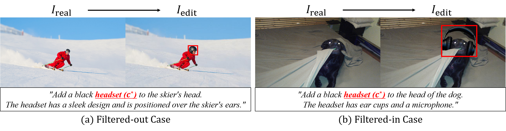

“Place-and-Verify” Pipeline
A two-stage framework that inserts rare-class instances naturally, then rigorously verifies every edit before it becomes supervision.

Our two-stage framework ensures high-fidelity I2I editing. (i) Place: A VLM proposes a semantically coherent instruction ($inst^*$) for inserting a rare class ($c^*$) that fits naturally within $I_\text{real}$. An instruction-based editor $\Phi_\text{I2I}$ then synthesizes $I_\text{edit}$. (ii) Verify: $I_\text{edit}$ is then validated. The new instance is localized via SSIM difference and open-vocabulary detection, semantically confirmed by a VLM filter, and masked using SAM. Finally, an annotation updater resolves occlusions with $A_\text{real}$, integrating the new instance to produce the trustworthy final annotation $A_\text{edit}$.

Qualitative examples of the VRAIN verification stage. (a) A helmet is added instead of the requested headset ($c^*$), creating a semantic mismatch, and is thus filtered out; (b) the target headset is correctly added, passing the verification.
Ablation on VLM Verification in VRAIN (Swin-L)
| Method | APbox | APmask | APrbox | APrmask |
|---|---|---|---|---|
| Real-only | 47.5 | 42.3 | 41.4 | 36.8 |
| DI2I only (w/o verification) | 47.4 | 42.5 | 39.5 | 36.0 |
| DI2I only (VRAIN) | 48.1 | 43.3 | 42.9 | 39.5 |
We compare I2I data with and without VLM-based filtering. Removing the verification step degrades both overall and rare-class AP — even falling below the Real-only baseline on rare classes (APrbox 41.4 → 39.5) — whereas VRAIN's verified data improves it (→ 42.9). This confirms the VLM filter is crucial for retaining semantically correct, relevant instances.